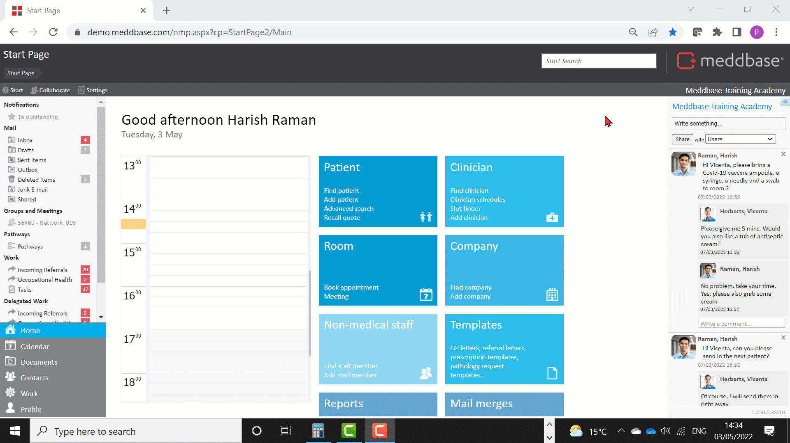

Meddbase System Administrators/Superusers with access to the Admin section of the Start Page can view and modify a host of configuration options and settings controlling the behaviour and workflows in the application. Many of the above are configured/controlled via the Configuration section*.
This article is a part of a collection of articles on the Admin > Configuration section. Click here for an overview article.
Many of the settings described in this series have default values when a Meddbase chamber is first created and do not need changing.
* Access to the Admin section and the ability to add/change configuration and settings are determined by the User's Role Group membership and Security Policy permissions granted. Please refer to the below articles for more details.
Understanding Role Groups - Definitions, related workflows and behaviours
This article is an overview of the Admin > Configuration > Appointments section and the available settings within.
To access the Configuration section, a permitted User should:-

The below table explains each setting, field and/or tick box in detail:
| Setting | Description/effect |
|---|---|
| Episodes | |
| Episodes become read-only after a fixed time | This checkbox enables setting the duration after which it will not be possible anymore to make manual changes to the data on the clinical form. |
Time (after scheduled appointment arrival) to wait before episodes become read-only | When the above setting is set to 'True'/Ticked you can provide a value in minutes, e.g. 10 min. After this time had elapsed, episodes become read-only |
| Make episodes on past appointments read-only once a new appointment arrives | This checkbox controls whether users can modify/edit data captured on clinical forms on past appointments. If set to 'True'/Ticked, and a new appointment's status is changed from 'Patient has not arrived yet' to 'Patient has arrived', all past episodes become read-only |
| Advanced | |
| Use SNOMED CT clinical coding on clinical forms | This checkbox controls whether when typing data into a field on a clinical form, the user receives a pop-up window with suggestions of words and phrases based on what they are typing. There are 2 types of suggestions the user may see:-
|
| Field history on clinical forms | This checkbox controls whether the user can view the history of entries in a particular field on a clinical form. When set to 'True'/Ticked, when navigating to a clinical form field in consultation, the user will see historical entries for that field on the right-hand side. |
| Enable patient data field undo | This checkbox controls whether, when entering data into a patient data field, users can undo the value entered and remove the entry, without it being recorded. |
| Clone global fields on new episode for reporting | This checkbox controls whether a value captured in a 'Global' field is carried over from episode to episode. For example, if the patient has Smoker value selected, it'll remain selected on future episodes until changed. Please note! A field is configured as 'Global' during the Clinical Form creation process handled by MMS Client Support Engineers. Please contact the CAM team on accountmanagement@meddbase.com for more details on Clinical Forms and making changes. |
| Meetings | |
| Users allowed to view/modify a meeting | This dropdown menu controls users' level of access to a meeting in Meddbase. The available options are as follows:-
|